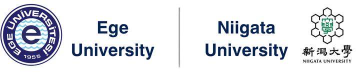
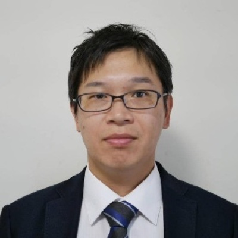
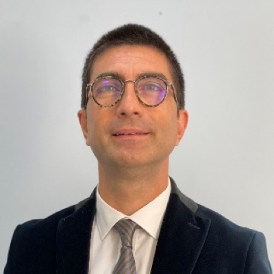
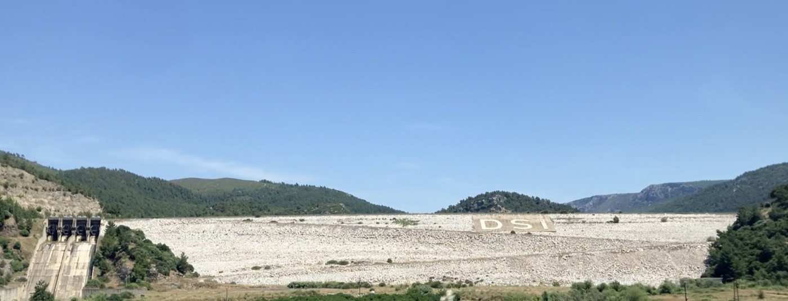
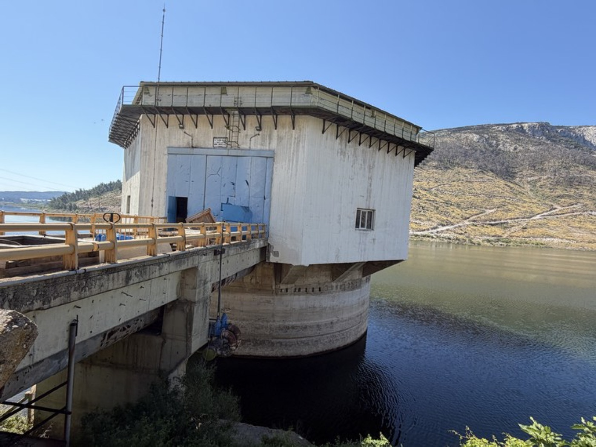
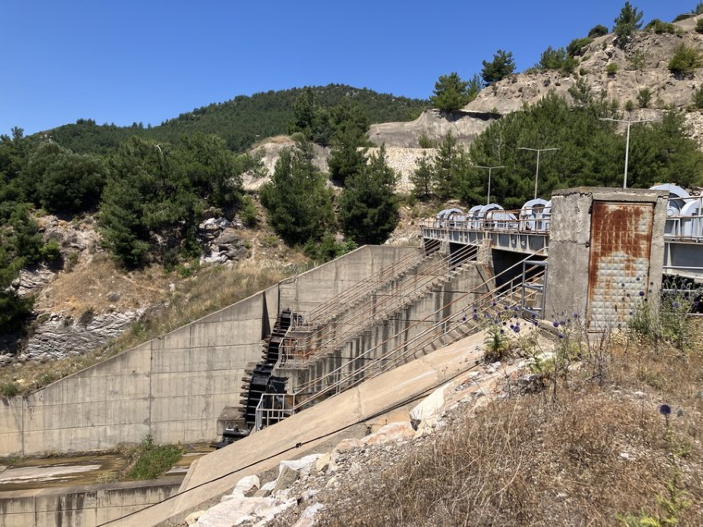
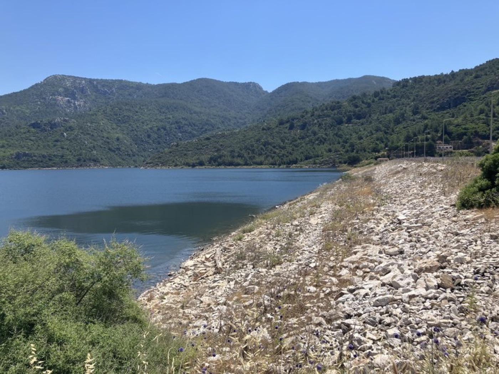
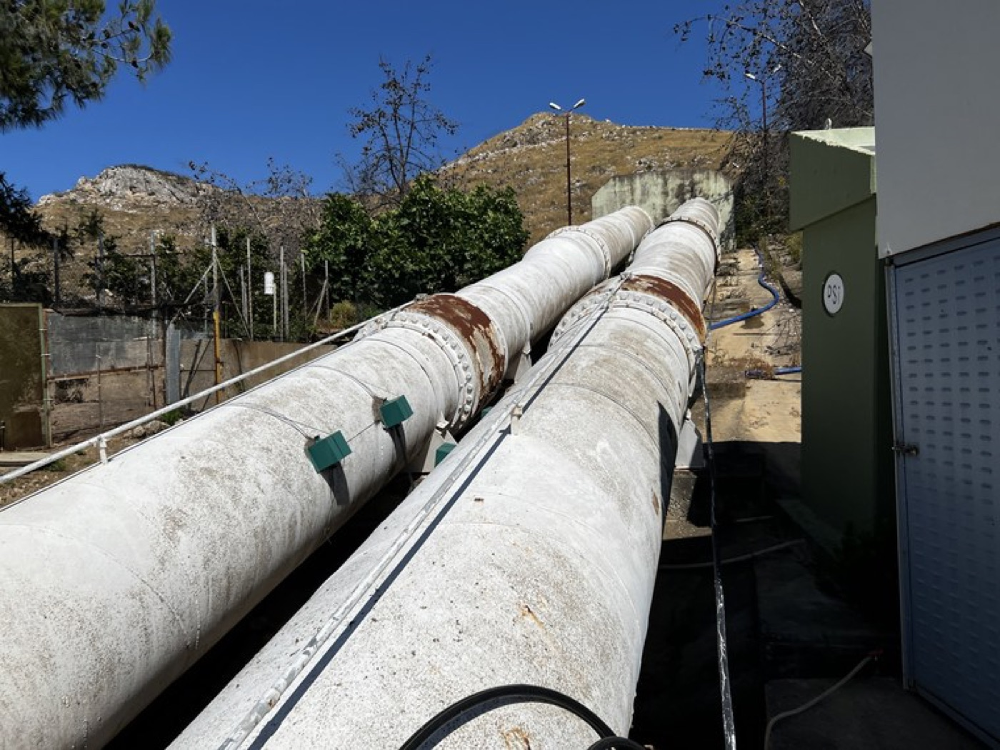
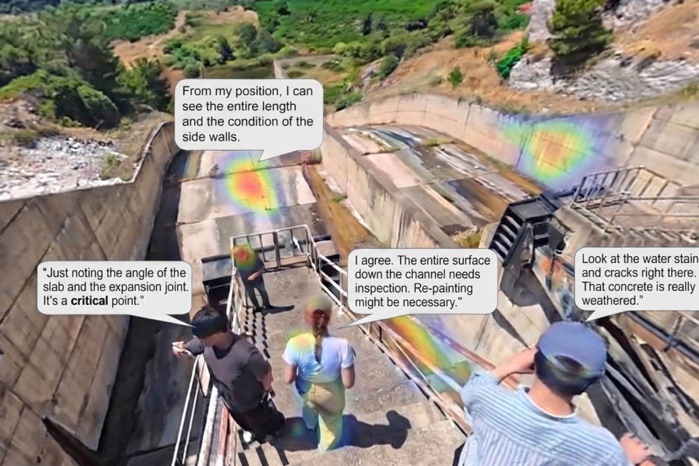
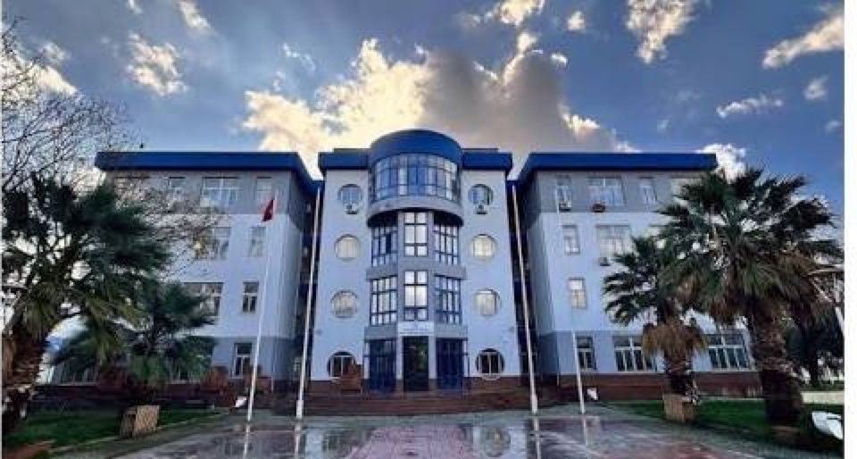

This QR code will be activated when the PDF is releasedScan to open on your phone
ORGANIZED BY

Niigata University, Faculty of Agriculture · Ege University, Faculty of Engineering
Co-organizer: Tokyo Metropolitan University, Dept. of Civil & Environmental Engineering
Under the JSPS Bilateral Program
Welcome Note
Dear Colleagues and Friends,
In recent years, the construction and maintenance of civil infrastructure have seen various attempts to improve efficiency and to visualize disaster risk through data sharing (DS) across multiple organizations, including ICT-based construction, construction DX (Digital Transformation), and BIM/CIM (Building/Construction Information Modeling, Management). Water infrastructure—represented by agricultural water systems and water supply and sewerage networks—is the central theme of this seminar and constitutes social infrastructure indispensable to human survival. When an earthquake strikes, further degradation of the production and living environment caused by damage to water infrastructure is unavoidable. This is not a problem confined to engineering: it calls for the collective wisdom of medicine, agriculture, the social sciences, and other disciplines working across conventional boundaries.
The 1st International Seminar on Optimal Management and Non-destructive Testing for Civil and Industrial Infrastructure (OMNI 2026) brings together researchers in civil engineering and agricultural engineering to discuss the advancement of maintenance and management, seismic disaster mitigation, and rapid recovery after earthquake disasters, addressing water infrastructure as well as urban and industrial infrastructure. This initiative builds on the bilateral international joint research between the Faculty of Engineering, Ege University (Republic of Türkiye) and the Faculty of Agriculture, Niigata University (Japan), which has continued since 2014. Through this research exchange between the two countries, we have placed particular emphasis on the active development of early-career researchers. A major motivation for this effort is that both Türkiye and Japan have experienced extremely severe earthquake disasters.
In Türkiye, the Türkiye–Syria earthquake of February 2023 affected more than 20 million people and damaged approximately 210,000 buildings. In Japan, even limiting the list to recent decades, numerous earthquake disasters have been recorded, including the Great Hanshin-Awaji Earthquake (1995), the Mid-Niigata Prefecture Earthquake (2004), the Great East Japan Earthquake (2011), the Kumamoto Earthquake (2016), and the Noto Peninsula Earthquake (2024). From the perspective of disaster prevention and mitigation, the development and proposal of advanced non-destructive testing technologies by researchers in agriculture and engineering from both countries offers comprehensive preparation for the compound disasters anticipated in the future—disasters that threaten not only urban infrastructure but also the very foundations of our survival, including food production. In addition to these technical efforts, an administrative and academic exchange between the cities of İzmir and Niigata is scheduled for April 2026, led by Prof. Dr. Yalçın Alver. Through such collaboration with public authorities, and not through technological development alone, we are seeking practical measures to protect our living and production environments from disaster.
It is our sincere hope that OMNI 2026 will contribute to research and development across national borders and to industry–government–academia collaboration. The seminar features 16 presenters — 9 from the Republic of Türkiye and 7 from Japan — of whom 5 are students (4 from Türkiye and 1 from Japan), together with 7 short communications by students, 6 from Japan and 1 from Türkiye. We look forward to seeing the young participants of this seminar grow into bridges between Türkiye and Japan in the years ahead.
Finally, this seminar has been organized with the support of the JSPS–TÜBİTAK Bilateral Joint Research Program (JPJSBP220269903). We express our sincere gratitude to Prof. Dr. Yalçın Alver and Prof. Dr. Ninel Alver of the Faculty of Engineering, Ege University, the host institution on the Turkish side and our joint implementers, for their generous cooperation. We also thank the participating members from the Japanese side—Dr. Toru Nakada, Senior Researcher, Institute for Rural Engineering, NARO; Assoc. Prof. Kentaro Ohno, Tokyo Metropolitan University; Assoc. Prof. Yohei Asada, Tokyo University of Agriculture and Technology; Assoc. Prof. So Fujiyama, Mie University; and Assist. Prof. Taiki Hagiwara, Yamaguchi University—for their participation and for their assistance with the organization of the seminar.
Prof. Dr. Tetsuya Suzuki Chair of OMNI 2026 Institute of Agriculture, Niigata University, Japan September 2026
Important Dates
Any change will be announced by e-mail to the registered participants.
Item
Date
Remarks
Abstract Submission (deadline)
31 August 2026
Abstract-only submission is required for presentation.
Final Programme Release
21 September 2026
Published on the seminar website.
Seminar — Day 1 (Sessions)
29 September 2026
Ege University, Faculty of Engineering, İzmir · Hybrid.
Seminar — Day 2 (Technical Tour)
30 September 2026
Tahtalı Dam
Special Issue Deadline
30 September 2026
Buildings (MDPI) · full-paper submission is optional.
Presentation Format
Oral presentation: 15 minutes for presentation and 5 minutes for Q&A and discussion. A two-page manuscript, including figures, tables and references, is published in this book.
Short communication: no oral presentation is scheduled. In place of a talk, four pages are allocated in this book, including figures, tables and references, so that the work can be reported more fully in writing.
All sessions are held in English. Real-time interpretation and live subtitles are provided in Japanese, English and Turkish.
About the Seminar
Aim and Scope
Infrastructure is ageing worldwide while disasters grow more severe and the time permitted for recovery grows shorter. Drawing on the experience of two seismically active nations and on documented cases of infrastructure failure, this volume brings together non-destructive testing, automation, and data-driven decision-making across civil and rural engineering, treating deterioration, disaster, and recovery not as separate problems but as three phases of a single infrastructure lifecycle.
Methodological distinctions between data-driven and physics-based approaches remain meaningful, and this volume does not set them aside. But the paradigm shift brought about by AI has made those distinctions insufficient as the sole axis of organization: what matters increasingly is what is being evaluated and for whom. The sessions are therefore divided by object and purpose rather than by method. Session A addresses non-destructive testing and the evaluation of materials and structures; Session B addresses integrated infrastructure management, where human agency — operation, inspection planning and maintenance decision-making — becomes part of the system under study. In civil and rural engineering, human involvement is not an external factor to be abstracted away but an inseparable part of how infrastructure functions, and any framework that aspires to describe these systems fully will eventually have to account for it.
Topics
Non-destructive testing of concrete and steel structures: acoustic emission, ultrasonic and impact elastic wave methods, impact-echo, infrared thermography, X-ray CT
Physics-based structural simulation, seismic analysis and performance assessment of weirs, dams and headworks
Hydraulic performance evaluation: flow analysis, transient pressure, leakage detection and water-level management in pipeline systems
Machine learning and AI for predictive maintenance, anomaly detection, knowledge discovery and automated decision-making
Case studies of infrastructure failure and post-incident condition analysis
Transportation engineering, micromobility, emergency access and post-disaster recovery
Rural and irrigation infrastructure: open channels, canal gates, drainage pump stations and their remote management
Seminar Structure
Day 1 (29 September) consists of an opening, two keynote lectures and two oral sessions, followed by a banquet. Every oral presentation is published in this book as a two-page manuscript. Contributions accepted as short communications are not presented orally; in place of a talk they are allocated four pages. There is no poster session in this edition. Day 2 (30 September) is a technical tour to Tahtalı Dam, covering the dam embankment and the water intake facility.
Programme at a Glance
Day 1 — Tuesday, 29 September 2026· Ege University, İzmir · Hybrid
Time
Item
Content
09:00
Opening
Opening address · Prof. Dr. Tetsuya Suzuki
09:15
Keynote A
Dr. Toru Nakada (NARO, Japan)
10:00
Session A-1~4
NDT & Material / Structural Evaluation
11:20
Coffee Break
11:40
Session A-5~7
NDT & Material / Structural Evaluation
12:40
Group Photo
All participants, on-site and online
12:45
Lunch
13:50
Keynote B
Prof. Dr. Yalçın Alver (Ege University, Türkiye)
14:30
Session B-1~3
Integrated Infrastructure Management
15:30
Coffee Break
15:50
Session B-4~7
Integrated Infrastructure Management
17:20
Closing
Closing remarks · Prof. Dr. Ninel Alver
18:00
Banquet
Kordon, Alsancak, İzmir
Day 2 — Wednesday, 30 September 2026· Tahtalı Dam · Technical Tour
Time
Item
Content
09:00
Departure
Faculty of Civil Engineering, Ege University
10:00~12:00
Technical Tour
Dam embankment, water intake facility and gate
12:00
Return
Return to İzmir · end of the seminar
Programme by Session
Sessions are organized by day and time block. The session chair is listed in the session header. Short communications are not presented orally and therefore do not appear in the timetable; they are published in this book after the oral sessions. Manuscripts of all contributions follow the programme.
Day 1 · Tuesday, 29 September 2026· Ege University, İzmir
09:00–09:15OpeningProf. Dr. Tetsuya Suzuki (Niigata University)
09:15–09:45Keynote Lecture ADr. Toru Nakada (NARO, Japan)From Remote Monitoring to Predictive Management: Digital Twins of Drainage Pump Stations and Agricultural Drainage Networks for Flood Resilience
SESSION A– NDT & Material / Structural Evaluation –
10:00–12:40Chair: Prof. Dr. Ninel Alver and Assoc. Prof. Dr. Yohei Asada
A-110:00
Prof. Dr. Tetsuya Suzuki
Digital Twin of RC Weir Piers Based on Seismic Analysis Integrating Surface and Internal Condition Assessment
Institute of Agriculture, Niigata University, Niigata, Japan
A-210:20
Prof. Dr. Niyazi Özgür Bezgin
Prospects of NDT Methods on Transportation Infrastructures for Accident Prevention
Civil Engineering Department, Istanbul University-Cerrahpaşa, Avcılar, Istanbul, Türkiye
A-310:40
Assoc. Prof. Dr. Kentaro Ohno (Online)
Estimation of Concrete Compressive Strength in Deteriorated RC Piers Using the Relationship between Elastic Wave Velocity and Core Strength
Department of Civil and Environmental Engineering, Tokyo Metropolitan University, Tokyo, Japan
A-411:00
Aseel Abdulazez Abdulridha
Graph Neural Networks for Delamination Detection in Concrete Shear-Wave Arrays
Department of Civil Engineering, Ege University, İzmir, Türkiye
11:20–11:40 Coffee break
A-511:40
Abdul Bari Rahimi
Monitoring of Reinforcing Steel Corrosion in RC Structures by Acoustic Emission
Department of Civil Engineering, Faculty of Engineering, Ege University, İzmir, Türkiye
A-612:00
Kazuma Shibano
Estimation of Delamination Depth and Thickness in Dam Subsurface Concrete by Surrogate Model Trained on Heat Balance Simulation Data
Graduate School of Science and Technology, Niigata University, Niigata, Japan
A-712:20
Assoc. Prof. Dr. Sena Tayfur
Damage Evolution of CFRP-Strengthened Concrete Beams Using Acoustic Emission
Department of Civil Engineering, Faculty of Engineering, Ege University, İzmir, Türkiye
15 min for presentation and 5 min for Q&A and discussion
12:40–12:45Group PhotoGroup photograph of all participants. Online participants join on screen, so that both modes appear in the same picture.
12:45–13:45Lunch
13:50–14:20Keynote Lecture BProf. Dr. Yalçın Alver (Ege University, Türkiye)Resilient Transportation Lifelines Under Flood Hazards: A Macroscopic Framework for Pre-Disaster Planning, Active Response, and Post-Disaster Evacuation
SESSION B– Integrated Infrastructure Management –
14:30–17:10Chair: Dr. Toru Nakada and Prof. Dr. Niyazi Özgür Bezgin
B-114:30
Prof. Dr. Ninel Alver
Damage Prediction in Concrete and Reinforced Concrete Structural Elements Using Transformer-Based Deep Learning Architectures on Acoustic Emission Data
Department of Civil Engineering, Faculty of Engineering, Ege University, İzmir, Türkiye
B-214:50
Assoc. Prof. Dr. Yohei Asada
Leak Detection by Extracting Leak Signals Based on the Pressure Wave Theory in Pipelines
Institute of Agriculture, Tokyo University of Agriculture and Technology, Tokyo, Japan
B-315:10
Dr. Elia Odabaşı
The Impact of Topography on Cycling Use
Department of Civil Engineering, Faculty of Engineering, Ege University, İzmir, Türkiye
15:30–15:50 Coffee break
B-415:50
Assoc. Prof. Dr. So Fujiyama
Development of an ICT Water Management System for Water Delivery Management and Water Infrastructure Management in a Semi-Closed Pipeline System
Mie Regional Plan Co-creation Organization, Mie University, Mie, Japan
B-516:10
Haktan Cangut
Road Infrastructure Safety and Accident Prevention: A Cyber-Physical Informatics Framework for ADAS Sensitivity Calibration
Department of Civil Engineering, Faculty of Engineering, Ege University, İzmir, Türkiye
B-616:30
Dr. Taiki Hagiwara
Hydraulic Transients in Pipelines Induced by Earthquakes
Graduate School of Sciences and Technology for Innovation, Yamaguchi University, Yamaguchi, Japan
B-716:50
Assist. Prof. Dr. Pelin Önelçin
Pedestrian Safety Perceptions and Intended Overpass Use: Survey Evidence from İzmir, Türkiye
Department of Civil Engineering, Faculty of Engineering, Ege University, İzmir, Türkiye
15 min for presentation and 5 min for Q&A and discussion
17:20–17:30Closing RemarksProf. Dr. Ninel Alver (Ege University)
18:00–BanquetKordon, Alsancak, İzmir
Day 2 · Wednesday, 30 September 2026· Technical Tour, Tahtalı Dam
09:00DepartureFaculty of Civil Engineering, Ege University
10:00–12:00Technical TourVisiting the dam embankment and the water intake facility. The walk is recorded as audio and 360° imagery, and is afterwards converted into a three-dimensional archive of the site.
Short Communications— published in the book, not presented orally
SHORT COMMUNICATIONS A
SA-1
Katsuki Sato, Kentaro Ohno, Tetsuya Suzuki and Kazuma Shibano
Estimation of Mechanical Properties of Concrete in Piers with Different Degrees of Deterioration Using the Impact Elastic Wave Method
Tokyo Metropolitan University · Niigata University, Japan
SA-2
Alinda Zeynep
Title to be announced
Faculty of Engineering, Ege University, İzmir, Türkiye
SA-3
Koki Ikeda
DCNN Based on X-ray CT Images for Detection of Cracking Damage of In-Service Concrete Structures
Faculty of Agriculture, Niigata University, Niigata, Japan
SHORT COMMUNICATIONS B
SB-1
Dilan
Transportation — title to be announced
Faculty of Engineering, Ege University, İzmir, Türkiye
SB-2
Yuto Takahashi
Hoop Strain-Based Approach to Detecting Leak Phenomena
Graduate School of Science and Technology, Niigata University, Niigata, Japan
SB-3
İlknur Türker and Yalçın Alver
Analysis of Accident Experiences, Causes and Types in Shared E-scooter Use: A Case Study in İzmir
Department of Civil Engineering, Faculty of Engineering, Ege University, İzmir, Türkiye
SB-4
Mostafa Elkassar, Masahiro Hyodo and Hidehiko Ogata
Non-Destructive Assessment of Buried RC Pipes: A Polynomial Internal Loading Method Analysis of Stiffness and Softening Across Deterioration and Burial Conditions
Tottori University, Tottori, Japan
Keynote Lectures
KEYNOTE A09:15–09:45

Dr. Toru Nakada
Institute for Rural Engineering, National Agriculture and Food Research Organization (NARO), Japan
LECTURE
From Remote Monitoring to Predictive Management: Digital Twins of Drainage Pump Stations and Agricultural Drainage Networks for Flood Resilience
Abstract
Drainage pump stations are critical infrastructure for protecting low-lying agricultural areas and surrounding communities from flooding. However, the infrastructure that protects against floods is itself vulnerable to flooding. Agricultural drainage pump stations are designed for prescribed flood conditions, and increasingly severe rainfall associated with climate change can exceed these assumptions, inundating pumps, electrical systems, and other critical components. This study develops a digital twin–based framework for flood monitoring, risk assessment, and rapid recovery of drainage pump stations and agricultural drainage networks. Three-dimensional models of pump-station exteriors and interiors were generated using UAV-based SfM/MVS and LiDAR measurements and integrated with canal, terrain, water-level, and inundation information in a web-based 3D GIS environment. By linking observed or simulated water levels with the elevations of vulnerable equipment, the system visualizes inundation progression and indicates operational risk. Hydraulic simulation results can also be superimposed to represent expected flood extent and depth across drainage networks and surrounding farmland. The framework extends digital twins from remote monitoring toward decision support for pump operation, operator evacuation, damage assessment, and post-disaster recovery. Future work will incorporate short-term water-level forecasting to support more proactive drainage management under extreme rainfall.
About the Speaker
Toru Nakada is a Senior Researcher in the Hydraulic Engineering Division, Institute for Rural Engineering, NARO, Japan. He received his Ph.D. in Agriculture from the University of Tokyo in 2010 and has worked at NARO since then, including a research assignment at the International Water Management Institute (IWMI) in Colombo, Sri Lanka, from 2018 to 2021. His research focuses on agricultural irrigation and drainage management, hydraulic and hydrological modeling, and applying ICT and AI to water management and disaster risk reduction. He is currently engaged in developing AI-based monitoring and control technologies for agricultural water infrastructure.
Session Chair: Prof. Dr. Tetsuya Suzuki
KEYNOTE B13:50–14:20

Prof. Dr. Yalçın Alver
Department of Civil Engineering, Faculty of Engineering, Ege University, İzmir, Türkiye
LECTURE
Resilient Transportation Lifelines Under Flood Hazards: A Macroscopic Framework for Pre-Disaster Planning, Active Response, and Post-Disaster Evacuation
Abstract
Transportation networks are the backbone of urban infrastructure during disasters, carrying emergency evacuation, search and rescue, and long-term humanitarian logistics. In seismically active regions like Turkey and Japan, floods, earthquakes, tsunamis, and landslides regularly damage highway networks and bridges, causing sudden capacity drops and severe gridlock. When major corridors go down, access to affected areas is compromised right when emergency responders need it most, during the golden hours of disaster relief. This keynote looks at how macroscopic transportation systems can be managed under extreme disaster scenarios. Rather than focusing only on localized structural assessment, it argues for a network-level resilience approach centered on functional accessibility and redundancy. The talk covers how real-time traffic monitoring, post-disaster travel demand modeling, and dynamic routing algorithms can be combined to make better use of limited road capacity. Proactive decision-support systems and pre-planned emergency corridors are key tools for reducing bottlenecks and keeping rescue resources moving. Specifically, flood-induced roadway inundation represents a highly dynamic hazard that necessitates active corridor-level management. By integrating real-time traffic signal optimization and macroscopic routing, this framework demonstrates how municipal agencies can dynamically preserve evacuation capacity and minimize bottlenecks. Ultimately, the transition toward integrated operational control ensures that critical transport pathways remain functional, bridging the gap between structural survivability and real-world disaster relief logistics.
About the Speaker
Prof. Dr. Yalçın Alver is a Professor in the Department of Civil Engineering at Ege University, where he has been on the faculty since 2009. He completed his master's degree at Ege University and received his Ph.D. in Transportation Engineering from Kumamoto University in Japan. He has served as a visiting researcher and professor at Kumamoto University, the Technical University of Berlin, and the University of Central Florida. His research focuses on transportation planning, traffic engineering, and public transit safety. His work appears in international journals including Accident Analysis & Prevention and Transportation Research Part F. Prof. Alver has directed four TÜBİTAK projects and nine other funded national research initiatives, while also advising government agencies and private organizations on transport policy.
Session Chair: Prof. Dr. Ninel Alver
Technical Tour — Tahtalı Dam
Wednesday, 30 September 2026
The second day of OMNI 2026 is devoted to a technical tour of Tahtalı Dam, one of the principal water-supply structures serving İzmir. The tour covers the dam embankment and the water intake facility, and is intended to give participants a shared physical reference for the discussions of the first day.
The tour is recorded and afterwards turned into an archive of two layers: the audio of the commentary and discussion exchanged at each point of the walk, and a three-dimensional model of the site reconstructed from 360° imagery by Structure-from-Motion. The spoken record is anchored to the position at which it was captured, so that anyone opening the archive can move through the model and hear what was said where it was said.
Programme
09:00
Departure
Faculty of Civil Engineering, Ege University
10:00
Dam embankment
Overview of the structure, inspection practice and maintenance history
11:00
Water intake facility
Intake structure and operation
12:00
Return
Return to İzmir · end of the seminar
Participants are asked to wear appropriate footwear and to follow the instructions of the site staff at all times. Photography restrictions, if any, will be announced on site.
Site Gallery — Tahtalı Dam

The embankment seen from the downstream side

Water intake facility

Gate and access structure

Reservoir and upstream slope

Conveyance pipeline downstream of the intake
New Challenges — Hybrid & Online Experience
Two technologies bring the field to every participant, on-site and online. They are introduced here not as a supplement to the programme, but as a part of it: OMNI 2026 is also a trial of how an international seminar in this field can be conducted.
01
AI Interpretation and Trilingual Communication (JP · EN · TR)
Real-time speech translation and live subtitles in Japanese, English and Turkish, supported by a pre-registered glossary of NDT terminology so that abbreviations and technical terms are rendered consistently throughout the seminar.
Abstracts submitted in advance are analysed to build the glossary, and the language model is given the context of each presentation, allowing precise technical discussion across the three languages.
02
Technical Archive Tour — Audio and Three-Dimensional Record
The technical tour at Tahtalı Dam is captured with 360° cameras and audio recorders, and is afterwards processed.
The archive therefore holds two things at once: the geometry of what was inspected, and the spoken record of what was said about it. Because each remark is anchored to the position at which it was made, the archive can be walked through rather than only watched — colleagues who could not travel, and those who did but wish to return to a detail, arrive at the same place in the same discussion.

Three-dimensional record of the survey site with anchored commentary
Linked Special Issue — Buildings (MDPI)
Digital Twins for Civil and Industrial Structures: Data-Physics Fusion-Driven Methods for Hazard Risk Management
Contributions presented at OMNI 2026 are warmly invited to the linked Special Issue of Buildings (MDPI). Submission to the seminar is abstract-only; full-paper submission to the Special Issue is optional. Article Processing Charge discounts are available on request — 50% for invited speakers and 20% for general participants — and are confirmed by the Editorial Office in advance of submission. If eight or more peer-reviewed papers are published, the collection is issued as a Special Issue Reprint with an ISBN.
Journal
Buildings (MDPI) · ISSN 2075-5309 · Open Access
Special Issue
Digital Twins for Civil and Industrial Structures: Data-Physics Fusion-Driven Methods for Hazard Risk Management
Guest Editors
Prof. Dr. Tetsuya Suzuki (Niigata University) Prof. Dr. Ninel Alver (Ege University) Assoc. Prof. Dr. Kentaro Ohno (Tokyo Metropolitan University)
3D shape reconstruction and internal condition detection integrating visible and invisible infrastructure domains, using satellite remote sensing, UAV-LiDAR, acoustic techniques and underwater sensing
Physics-based structural simulation and seismic analysis coupled with the real condition of the structure for performance assessment
Hydraulic performance evaluation: flow analysis, leakage detection, pipeline water-level management and flood simulation for pump stations
Machine learning and AI for predictive maintenance, anomaly detection, knowledge discovery and automated decision-making
Disaster management systems integrating rapid damage assessment, traffic management for emergency response and recovery planning
Original research, comprehensive reviews and case studies are welcome, covering civil, architectural and industrial structures such as buildings, bridges, roads, dams, headworks, channels, pipelines and pump stations.
Organization
Seminar Chairs
Prof. Dr. Tetsuya Suzuki
Institute of Agriculture, Niigata University, Niigata, Japan
Chair (Japan side) · Leading Guest Editor, Buildings Special Issue
Prof. Dr. Ninel Alver
Department of Civil Engineering, Faculty of Engineering, Ege University, İzmir, Türkiye
Chair (Türkiye side) · Co-Guest Editor, Buildings Special Issue
Co-Chairs
Assoc. Prof. Dr. Kentaro Ohno
Department of Civil and Environmental Engineering, Tokyo Metropolitan University, Tokyo, Japan
Co-Guest Editor, Buildings Special Issue
Prof. Dr. Yalçın Alver
Department of Civil Engineering, Ege University, İzmir, Türkiye
Transportation Engineering · Keynote Lecture
Organizing Committee
Assoc. Prof. Dr. Yohei Asada
Institute of Agriculture, Tokyo University of Agriculture and Technology, Tokyo, Japan
Assoc. Prof. Dr. So Fujiyama
Mie Regional Plan Co-creation Organization, Mie University, Mie, Japan
Assist. Prof. Dr. Taiki Hagiwara
Graduate School of Sciences and Technology for Innovation, Yamaguchi University, Yamaguchi, Japan
Dr. Toru Nakada
Institute for Rural Engineering, National Agriculture and Food Research Organization (NARO), Japan
Keynote Lecture · Chair, Session B
Assist. Prof. Dr. Pelin Önelçin
Department of Civil Engineering, Faculty of Engineering, Ege University, İzmir, Türkiye
Assoc. Prof. Dr. Sena Tayfur
Department of Civil Engineering, Faculty of Engineering, Ege University, İzmir, Türkiye
Kazuma Shibano
Graduate School of Science and Technology, Niigata University, Niigata, Japan
Session Chairs
Session A — NDT & Material / Structural Evaluation
Chair: Prof. Dr. Ninel Alver and Assoc. Prof. Dr. Yohei Asada
Session B — Integrated Infrastructure Management
Chair: Dr. Toru Nakada and Prof. Dr. Niyazi Özgür Bezgin
Venue & Access
Day 1 — Seminar Venue
Department of Civil Engineering, Faculty of Engineering, Ege University(Room D304) Erzene Mah., Ege Üniversitesi Kampüsü, No: 172 D: 88B, 35040 Bornova / İzmir, Türkiye
Tahtalı Dam, İzmir, Türkiye. The tour covers the dam embankment, the water intake facility and the gate.
Online Participation
Remote participants join through the hybrid platform. Connection details, and the interpretation channel will be circulated by e-mail before the seminar.
The Venue

Ege University, Faculty of Engineering — Bornova campus, İzmir